|
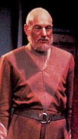 |
"Algumas pessoas pensam que o futuro
significa o fim da História. Bem, ainda não chegamos realmente ao
fim da História. Seu pai chamava o futuro de 'a terra
desconhecida'. As pessoas podem ficar muito aterrorizadas com
mudanças." |
|

| O
desenvolvimento do novo design do Trek Brasilis foi um
desafio enorme, tanto em termos visuais, quanto estruturais.
Quando a equipe do TB começou a discutir o assunto,
definimos qual seria a prioridade número um da reformulação:
a aproximação do site com o seu público.
Ao longo de seus quatro anos de existência, o TB conquistou a simpatia de muitos de seus visitantes. Mas o princípio que norteou a criação do site era muito mais abrangente do que esse: a idéia era desenvolver uma comunidade integrada, crítica e participativa de admiradores de Jornada nas Estrelas. Demos muitos passos nessa direção, mas ainda havia uma barreira estrutural que impedia a realização completa desse objetivo. Não é à toa que um dos conceitos mais inovadores do novo TB é a criação da editoria de Interação. É a partir desse canal que pretendemos dissolver a barreira entre leitores e escritores no site, evitando todos os problemas que envolvem a simples exclusão dessa separação sem mecanismos que preservem a integridade e a qualidade do conteúdo. O conceito por trás de Interação dá a cada leitor a chance de ser uma parte do TB, contribuindo com material de forma organizada e com o padrão de qualidade que você já conhece. Outra novidade é a editoria de Entretenimento. Ela também promove a interação entre o site e seu público, mas de uma forma bem mais conservadora. Seu grande objetivo é garantir que você, leitor, possa se divertir com Jornada nas Estrelas, em todas as suas formas. Teremos paródias, contos escritos por fãs, o já consagrado jogo de trivia feito em parceria com os amigos do site Organia, análises bem-humoradas de episódios da série e assim por diante. Essas duas editorias marcam a "nova cara" do site. Faltava traduzir isso em termos visuais, o que refletiu uma tarefa ainda mais desafiadora. Como criar um design que fosse capaz de manter a identificação com o TB que você já conhecia e de ainda assim apontar para as mudanças profundas que estavam acontecendo?
(R)evolução visual A equipe do TB se debruçou sobre essa questão por meses a fio. A diretriz inicial para o designer era simples: vá lá e crie algo totalmente novo, criativo e que reflita uma revolução tão grande no site quanto a que havia acontecido há dois anos. Os primeiros trabalhos foram no sentido de imprimir um tom épico ao site, algo inspirado pelo visual de "2001: Uma Odisséia no Espaço". 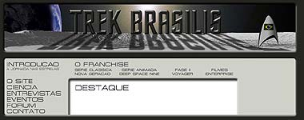 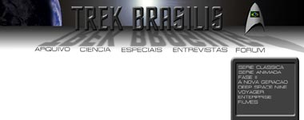 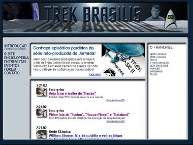 O "Trek Brasilis Monolito" logo se mostrou até bonito, sóbrio e interessante, mas ainda falta algo que o distinguisse qualitativamente (e não apenas visualmente) de sua versão anterior. Tentativas de "consertar" esse conceito inicial foram feitas ao longo dos meses posteriores (os trabalhos começaram em abril de 2002), mas sem sucesso. A solução foi tentar algo radicalmente diferente -- simplificar o design, tornando-o funcional ao extremo, sem tratamento estilístico agressivo. Em outras palavras, um salto do "épico" ao "moderno" e "clean". As soluções obtidas com base nesse conceito foram igualmente (ou até mais) insatisfatórias, como se pode ver nas imagens abaixo. 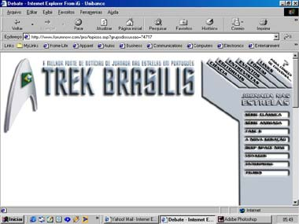 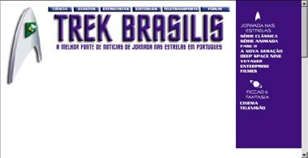 Perdidos entre dois extremos, os editores do TB voltaram mais uma vez à estaca zero. Numa terceira investida, buscou-se abandonar uma solução "estilizada" a priori. A idéia agora, mais segura, era usar a restruturação de conteúdo, que também estava sendo planejada paralelamente, como uma espécie de farol para iluminar a reconstrução do design. Encontrado esse foco, foi iniciado um trabalho numa direção mais "intimista", que alinhasse de forma mais efetiva o público com o site. Mais ilustrações, figuras simpáticas e ítens de menu combinando personagens conhecidos e situações relacionadas começaram a brotar no novo visual. 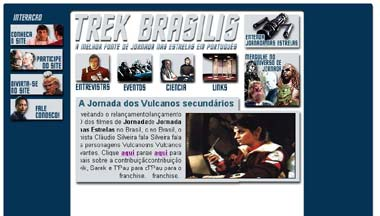 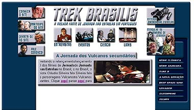 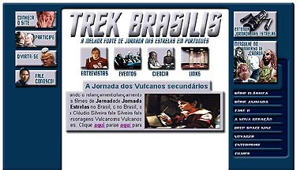 Os editores estavam todos muito satisfeitos com a direção do novo trabalho. Parece que finalmente o TB estava ganhando uma cara nova. Com o visual predominantemente azul escuro, algo da identidade antiga ainda sobrevivia no trabalho atual. Mas havia um problema muito sério com o conceito todo: ele diluía a atenção do leitor. Chegando à página principal, o internauta simplesmente não sabia para onde olhar -- tantas figuras interessantes, um visual tão agradável e simpático, mas uma perda total da hierarquia do conteúdo. De volta à prancheta... Claramente, era preciso tentar manter o recém-obtido caráter "intimista" do site. Ainda assim, era preciso tornar o site hierarquicamente mais organizado, com um foco claro sobre o que era mais importante. Um novo design foi projetado, abandonando todas as estratégias anteriores. Um visual mais simplificado foi a resposta. Apesar da aparência ainda pouco trabalhada (e um banner falso que prejudicava o conjunto), começava a se tornar apenas uma questão de sintonia fina com relação às cores e o layout final. 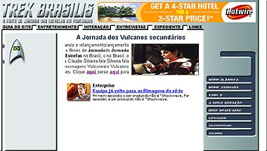 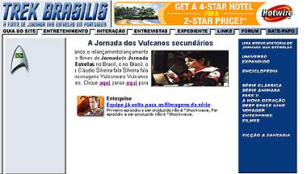 Com uma imagem maior e predominante na tela, foi possível recuperar parte da sensação "intimista" do site e ainda assim mantê-lo perfeitamente coerente com a hierarquização do conteúdo. O equilíbrio parecia ter sido atingido. A partir daí, tínhamos um novo visual, que atendia às novas e ambiciosas pretensões do Trek Brasilis a partir de seu terceiro ano. 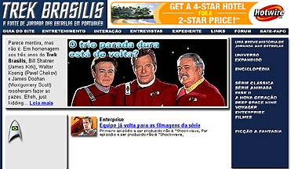 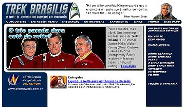
Alicerces firmes Finalmente, os editores chegaram a um conceito que parecia ter unido o melhor dos dois mundos: permitir a você usufruir de todas as vantagens do novo TB, sem ter perdido aquilo que você mais gostava na versão anterior. Claro, sempre vai haver alguma coisa que parecia melhor na versão original, ou outra que ainda possa ser melhorada, mas, como não pretendemos deixar a web tão cedo, não deixe de anotar qualquer sugestão e escrever para nós! O TB é sempre um trabalho em andamento... Como já citamos anteriormente, as editorias Interação e Entretenimento são apenas algumas das novidades do TB. E o que dissemos aqui sobre elas é apenas uma breve descrição de suas funções, mas que não faz justiça a tudo que elas representam. Por isso, encorajamos você a vê-las e descobrir o que há de novo. Aliás, isso vale para todo o site. Não houve uma seção que não modificamos, melhoramos, reorganizamos, retrabalhamos. Basta citar a nova Enciclopédia do TB, que pretende conter, com o tempo, simplesmente tudo que você pode querer saber sobre Jornada nas Estrelas, com direito a cronologias das séries, informações sobre raças alienígenas, bebidas exóticas, armas poderosas e naves espaciais que já agraciaram alguma vez o universo de Jornada. O novo projeto do TB, além de aproximar de forma inédita público e editores, procurou estabelecer os alicerces para a criação de uma plataforma abrangente de tudo que diz respeito a Jornada nas Estrelas no país. O novo enfoque vai menos na direção de reservatório multimídia, mas caminha a largos passos para cobrir toda a franquia com informações confiáveis e minuciosas. A idéia é que a nova organização do site permita que um visitante, seja qual for seu conhecimento prévio de Jornada nas Estrelas, possa encontrar a informação que procura, com o nível de aprofundamento que procura, o mais rapidamente possível, sem se perder ou ficar navegando a esmo pelo site. Isso implicou não só a restruturação de todas as seções de conteúdo, mas também a criação de uma seção que servisse como guia para que o internauta consiga obter o máximo aproveitamento de sua navegação pelo site e se sinta à vontade para ficar conosco o maior tempo possível. Esse foi o conceito que norteou a nova versão do TB. Agora, como ele se traduziu em ações e se concretizou são outros quinhentos. Poderíamos aqui gastar páginas e páginas para descrever tudo que foi modificado. Mas o melhor jeito de ver as coisas, em tudo na vida, é ver por si mesmo. O sonho do TB é desenvolver toda uma comunidade de pessoas que são capazes de ver o mundo de uma forma ligeiramente diferente, consubstanciando suas opiniões com argumentação sólida e crítica. Consideramos esse passo crucial ao estabelecimento de um mundo em que a mensagem de Jornada nas Estrelas, de tolerância e apreciação da diversidade, possa um dia se tornar realidade. E, se em nossa pequena esfera de atuação, conseguirmos propagar esse conceito, já estamos satisfeitos. Bom passeio. |